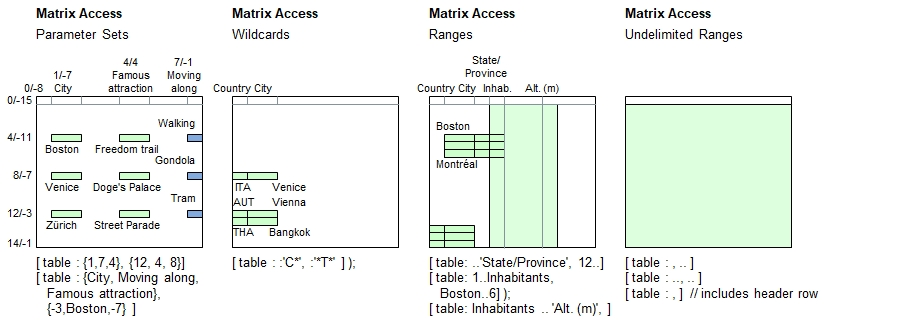

Introduction
The matrix table access is one of the four basic table access methods which combines both horizontal table access and vertical table access in order to access cells in multiple rows and columns in one. You can freely combine different ways to access the rows and columns, for example parameter sets for the rows and wildcards for the columns, and so forth.
Principle
The following illustrations hows how the different approaches can be freely combined horizontally and vertically.

Programming examples
table load( table, "Examples\Cities.csv");
echo( [ table : {1,7,4}, {12, 4, 8}] );
echo;
echo( [ table : :'C*', :'*T*' ] );
echo;
// 1st horizontal match is country, therefore it checks for all countries containing 'T'
// Country and City are retrieved
echo( [ table: ..'State/Province', 12..] );
echo( [ table: 1..Inhabitants, Boston..6] );
a[] = [ table: Inhabitants .. 'Alt. (m)', ]; // Read all rows incluuding the header
for all parameters( a[], b[] ) echo( b[] );
// Reading no data
echo;
echo( [ table: :'xxx', :'yyy' ] ); // Returns 0 rews
echo( [ table: :'C*', :'yyy' ] ); // Found 2 columns, but number of rows is 0.
echo( [ table: :'xxx', :'*' ] ); // All rows, no column
echo( [ table: {2,3,4}, {} ] ); // 3 columns, no row
echo( [ table: {}, {2,3,4} ] ); // No column, 3 rows
echo( [ table: {}, {} ] ); // Nothing
echo;
// Matrix access on one single row, column, cell. Note: Always nested parameter sets
// First level: Rows, 2nd level: COlumns
echo( [ table: {City}, 1..3 ] ); // One column
echo( [ table: City..Inhabitants, {Venice} ] ); // One row
echo( [ table: {Moving along}, {3} ] ); // One cellOutput:
{{'Zürich','Tram','Street Parade'},{'Boston','Walking','Freedom trail'},{'Venice','Gondola','Doge's Palace'}}
{{'ITA','Venice'},{'AUT','Vienna'},{'THA','Bangkok'}}
{{'SWI','Zürich','Kt. Zürich'},{'FRA','Paris','Île de France'},{'SWI','Davos','Grisons'}}
{{'Boston','Massachusetts',620000},{'San Francisco','California',805000},{'Montréal','Quebec',1700000}}
{'Inhabitants','Famous attraction','Alt. (m)'}
{8300000,'St. of Liberty',10}
{650000,'Lincoln Statue',7}
{1500000,'Independence hall',12}
{620000,'Freedom trail',43}
{805000,'Golden Gate',16}
{1700000,'Hôtel du Parlement',''}
{580000,'Little Mermaid',24}
{260000,'Doge's Palace',1}
{3800000,'Hollywood',100}
{1800000,'Prater',''}
{8250000,'Wat Phra Kaeo',5}
{404000,'Street Parade',408}
{2240000,'Eiffel Tower',''}
{11000,'Weissfluhgipfel',1650}
{}
{}
{}
{}
{}
{}
{{'New York City'},{'Washington'},{'Philadelphia'}}
{{'Venice','Venetia',260000}}
{{'PCC streetcar'}}
Read Accesses
The value(s) read from the table will be provided in nested parameter sets: One complete set containing sets resembling rows which in turn
contain the columns in their rows.
Example: { { Row 1 Column 1, Row 1 Column 2 }, { Row 2 Column 1, Row 2 Column 2 } } .
Even if the matrix access results in a single row, single column or even single cell, all such values are returned in nested parameter sets.
Example: [ table: { City }, { 4 } ] returns { { Boston } }.
If the read access results in no matches (e.g. empty parameter sets provided to specify rows or columns, wildcard patterns yielding no matches
and/or ranges in wrong direction), then empty sets will be returned.
Write Accesses
Write access using matrix access method appears tricky but is not. The most simple approach is to specify staring ranges for rows and columns and do the writing, e.g. [ table: 3.., 4.. ]. Write access begins in row 4 and column 3. Alternatively, when writing a value (not parameter set) to a table, then the same value will be written into all cells as specified with the vertical table access.
Programming examples
table initialize( table, { { A0 .. O0 } } );
[ table: .., 1..15 ] = '.'; // Initialize with points
// Writing some data (actually on row 3 and 5)
a[] = { { 3, 4, 5, 6 }, {}, { 23, 24, 25 } };
[ table: 2.., 3.. ] = a[]; // Write all values (as long if inside the table
[ table: J0..K0, 3.. ] = a[]; // Note: Limited to 2 columns (5,6 and 25 are not written)
[ table: N0.., 10.. ] = a[]; // Writes beyond the existing headers (note 2 unnamed columns added)
table list( table );
echo("Further write accesses:");
table initialize( table, { { A0 .. O0 } } );
[ table: .., 1..15 ] = '.'; // Initialize again
[ table: ..1, ..2] = { { aa, bb, cc }, { dd, ee, ff }, { gg, hh, ii } }; // Only 4 elements written
[ table: 2.., -3.. ] = { 1,2,3,4,5 }; // Last 3 rows
[ table: 10.., -3.. ] = {{ 1,2,3,4,5 }}; // Only 1 row
[ table: H0.., 1.. ] = { {1},{2},{3},{4},{5} }; // Only 1 column
[ table: B0..D0, 6..8 ] = X; // 1 value written everywhere
[ table: { N0, M0, K0 }, {3,2,1} ] = a[]; // Write in opposite directions
table list( table );Output:
0 : A0 | B0 | C0 | D0 | E0 | F0 | G0 | H0 | I0 | J0 | K0 | L0 | M0 | N0 | O0 | |
1 : . | . | . | . | . | . | . | . | . | . | . | . | . | . | . | |
2 : . | . | . | . | . | . | . | . | . | . | . | . | . | . | . | |
3 : . | . | 3 | 4 | 5 | 6 | . | . | . | 3 | 4 | . | . | . | . | |
4 : . | . | . | . | . | . | . | . | . | . | . | . | . | . | . | |
5 : . | . | 23 | 24 | 25 | . | . | . | . | 23 | 24 | . | . | . | . | |
6 : . | . | . | . | . | . | . | . | . | . | . | . | . | . | . | |
7 : . | . | . | . | . | . | . | . | . | . | . | . | . | . | . | |
8 : . | . | . | . | . | . | . | . | . | . | . | . | . | . | . | |
9 : . | . | . | . | . | . | . | . | . | . | . | . | . | . | . | |
10 : . | . | . | . | . | . | . | . | . | . | . | . | . | 3 | 4 | 5 | 6
11 : . | . | . | . | . | . | . | . | . | . | . | . | . | . | . | |
12 : . | . | . | . | . | . | . | . | . | . | . | . | . | 23 | 24 | 25 |
13 : . | . | . | . | . | . | . | . | . | . | . | . | . | . | . | |
14 : . | . | . | . | . | . | . | . | . | . | . | . | . | . | . | |
15 : . | . | . | . | . | . | . | . | . | . | . | . | . | . | . | |
Further write accesses:
0 : A0 | B0 | C0 | D0 | E0 | F0 | G0 | H0 | I0 | J0 | K0 | L0 | M0 | N0 | O0
1 : aa | bb | . | . | . | . | . | 1 | . | . | 25 | . | 24 | 23 | .
2 : dd | ee | . | . | . | . | . | 2 | . | . | . | . | . | . | .
3 : . | . | . | . | . | . | . | 3 | . | . | 5 | . | 4 | 3 | .
4 : . | . | . | . | . | . | . | 4 | . | . | . | . | . | . | .
5 : . | . | . | . | . | . | . | 5 | . | . | . | . | . | . | .
6 : . | X | X | X | . | . | . | . | . | . | . | . | . | . | .
7 : . | X | X | X | . | . | . | . | . | . | . | . | . | . | .
8 : . | X | X | X | . | . | . | . | . | . | . | . | . | . | .
9 : . | . | . | . | . | . | . | . | . | . | . | . | . | . | .
10 : . | . | . | . | . | . | . | . | . | . | . | . | . | . | .
11 : . | . | . | . | . | . | . | . | . | . | . | . | . | . | .
12 : . | . | . | . | . | . | . | . | . | . | . | . | . | . | .
13 : . | . | 1 | 2 | 3 | 4 | 5 | . | . | . | 1 | 2 | 3 | 4 | 5
14 : . | . | . | . | . | . | . | . | . | . | . | . | . | . | .
15 : . | . | . | . | . | . | . | . | . | . | . | . | . | . | .